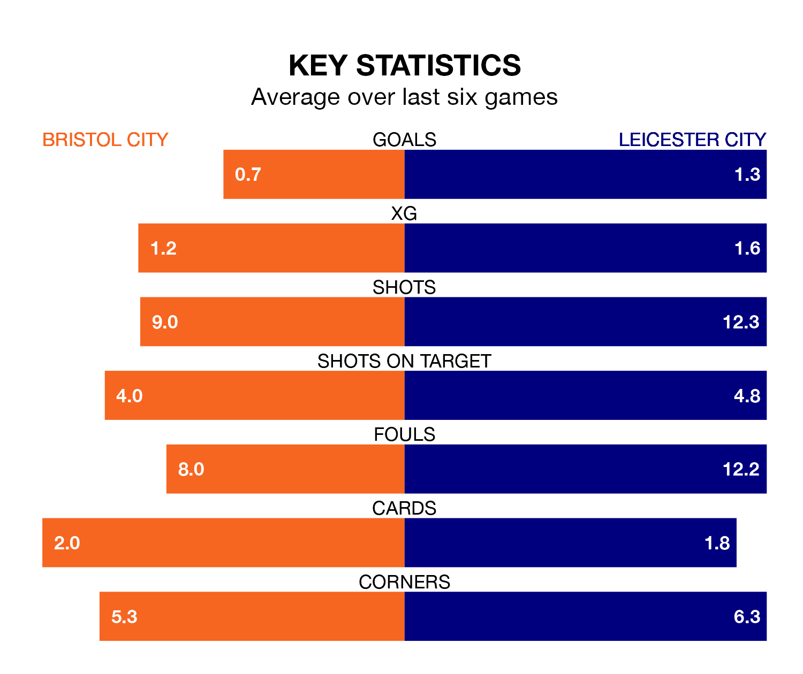

Leicester City are strong favourites to take all three points despite Bristol City's home advantage in Friday lunchtime's match at Ashton Gate.
*Betting Company* are offering odds of 1.91 on Leicester sealing the win, with the visitors sitting second in EFL Championship table.
Bristol City, who are 14th in the league and 35 points behind the Foxes, are priced at 4.1 to win. A draw is set at 3.65.
With 74 goals in 37 games so far this season, Leicester are the league's second-highest scorers with 2.0 goals per game. And they are conceding fewer than average, letting in 33 goals at a rate of 0.9 per game.
Bristol City, meanwhile, are below average scorers, with 1.1 goals per game, compared to a league average of 1.4. They have conceded 1.2 goals per game.
The Robins are in bad form in EFL Championship, with one win and five losses from their last six games.
With two wins and a draw over that period, Leicester City's form is better – they have taken seven points from 18, compared to the home team's three.
With Mads Hermansen between the sticks, the Foxes can rely on one of the league's safest pair of hands. He has kept 12 clean sheets in his 36 appearances this season, and only two other 'keepers – Leeds United's Illan Meslier and West Bromwich Albion's Alex Palmer – have been able to prevent the opposition scoring on more occasions in EFL Championship.
In Bristol City's net, Max O’Leary has eight clean sheets in 38 games. He has conceded a goal every 86 minutes, 40% more often than the 120 minutes between goals for Hermansen.
Bristol City's last match was on March 16, a 2-0 loss against West Bromwich Albion.
Leicester drew 2-2 with Hull City last time out, on March 9, with Jamie Vardy on the scoresheet.
Updated: 10:19 (UTC), 22/03/24